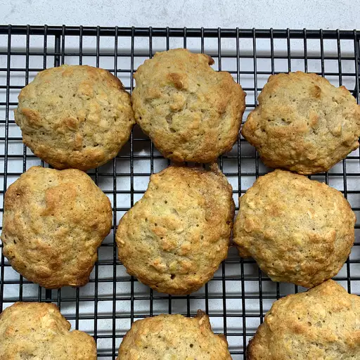

Banana Oatmeal Cookie

Description
This recipe has been handed down in my family for generations. It's a good way to use overripe bananas. It's also a
moist cookie that travels well either in the mail or car. This is usually the first cookie to disappear at my house.
Ingredients
- 1 ½ cups sifted all-purpose flour
- ½ teaspoon baking soda
- 1 teaspoon salt
- ¼ teaspoon ground nutmeg
- ¾ teaspoon ground cinnamon
- ¾ cup shortening
- 1 cup white sugar
- 1 egg
- 1 cup mashed bananas
- 1 ¾ cups quick cooking oats
- ½ cup chopped nuts
Steps
- Preheat oven to 400 degrees F (200 degrees C).
- Sift together the flour, baking soda, salt, nutmeg and cinnamon.
- Cream together the shortening and sugar; beat until light and fluffy. Add egg, banana, oatmeal and nuts. Mix well.
- Add dry ingredients, mix well and drop by the teaspoon on ungreased cookie sheet.
- Bake at 400 degrees F (200 degrees C) for 15 minutes or until edges turn lightly brown. Cool on wire rack. Store in a
closed container.